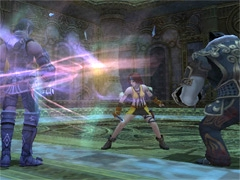
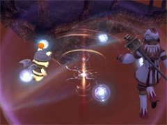
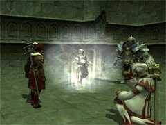
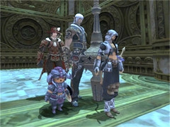
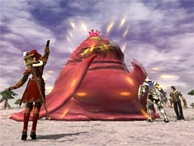
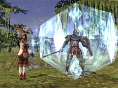
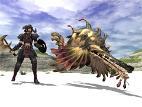
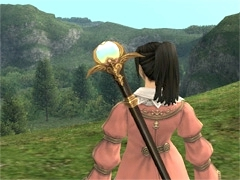
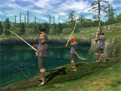
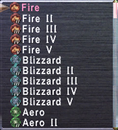

Event-related
- 
- Read on for details regarding this content.
-
- 
- The acquisition of other rewards will no longer be interrupted when a rare item already in one's possession is among the spoils obtained from a Riftworn Pyxis after selecting "obtain all."
- Enemies' resistance to enfeebling magic has been adjusted.
- It is now possible to reenter a battlefield after being ejected due to all participants having been KO'd.
- In addition, the distance that enemies roam has been adjusted.
- 
- Enemies' resistance to enfeebling magic has been adjusted.
- Objectives for the following training regime have been revised:
- Ifrit's Cauldron: Page 5
- Potency of the field support effect White Magic: Protect has been increased.
-
- 
- All rewards procured from the Nashmau (H-7) NPC Kilusha will now be displayed on a single page.
Battle-related
- The following job-related adjustments have been made:
-
- The effect of Protect V merit points has been adjusted.
- The value for each point has been modified from DEF+2 to DEF+5
- The effect of Knight's Minne merit points has been adjusted.
- The value for each point has been modified from DEF+1 to DEF+2.
- [dev1129] The maximum number of upgrades for the attribute merit point category has been raised from twelve to twenty-four.
- [dev1093] Enfeebling Magic Resistance of Monsters
- 
- A log message now appears when a monster resists an enfeebling spell which enables the player to determine whether a monster possesses complete resistance to a particular type of enfeebling magic.
- As long as the monster does not completely resist the effect, it is possible to inflict enfeebling magic upon them. The number of affectable monsters has drastically increased.
- A new system has been added in which using enfeebling magic multiple times will lower the target enemy's resistance. This system is known as "Immunobreak."
- When an Immunobreak occurs after the enemy has resisted a particular enfeebling magic, the resistance of the enemy to that effect will decrease by a certain amount.
- Immunobreaks can stack and continually lower an enemy's resistance.
- The more times the enfeebling magic is resisted, the greater the likelihood that an Immunobreak will occur.
- When the enfeebling effect is successfully applied, the resistance will reset.
- If the effect is continuously applied, the enemy will slowly gain more resistance, and eventually Immunobreaks will no longer occur.
- Note that some monsters have complete resistance to enfeebling effects.
- (Immunobreaks will not occur on enemies which have complete resistance.)
- Immunobreaks only apply to enfeebling effects (magic abilities based on Enfeebling Magic skill level).
- [dev1128] The following spell effects have been raised:
- 
- Protect / Protectra / Protect II / Protectra II / Protect III / Protectra III / Protect IV / Protectra IV / Protect V / Protectra V / Knight's Minne / Knight's Minne II / Knight's Minne III / Knight's Minne IV / Knight's Minne V
- [dev1128] Resistances to the following spells have been changed:
- Foe Requiem / Foe Requiem II / Foe Requiem III / Foe Requiem IV / Foe Requiem V / Foe Requiem VI / Foe Requiem VII
- [dev1130] The interval between the conclusion of battle and the next possible time an attack command can be carried out has been adjusted.
- [dev1130] The interval between the time a ranged attack finishes and the next possible time a new command can be carried out has been reduced.
- [dev1130] Guard and Parry Adjustments
- The guard and parry skills have been adjusted so that they may level up even if the skills do not activate when players are attacked.
- A new familiar may now be summoned with the beastmaster ability "Call Beast."
- 
- The beastmaster ability Tame may no longer be used if you already have a familiar out.
Item-related
- New items have been added.
- 
- New synthesis recipes have been added.
- New synergy recipes have been added.
<Rank: Apprentice>
| Item
|
Required Crafting Skill
|
Ingredients
|
| Iridal Staff
|
Woodworking
|
Fire Staff, Ice Staff, Wind Staff, Earth Staff, Thunder Staff, Water Staff, Light Staff, Dark Staff
|
| Chatoyant Staff
|
Woodworking
|
Vulcan's Staff, Aquilo's Staff, Auster's Staff, Terra's Staff, Jupiter's Staff, Neptune's Staff, Apollo's Staff, Pluto's Staff
|
|
<Rank: Adept>
- The following items are no longer classified as rare:
- Cordial Invite / Mercenary Camp Entry Slip / Martial Ball Invite / Training Grounds Key / Pest Repellant
System-related
- [dev1126] An upper limit on the frame rate for fishing animations has been implemented so as to decrease the gap experienced between different platforms.
- 
[Windows and Xbox 360 Only]
- [dev1134] Spell icons have been modified in preparation for the UI overhaul.
- 
Resolved Issues
- The following issues have been corrected:
- The issue with Einherjar wherein players could access Odin's Chamber and Odin's Chamber II without either the title Elite Einherjar or the requisite amount of valkyrie feathers.
- The issue with Legion wherein the Legion Libretto's "random selection" option would occasionally function improperly.
- The issue wherein the help text for the familiars Crab Familiar and Courier Carrie's pet command Bubble Shower erroneously read "within a fan-shaped area originating from pet" instead of "within area of effect."
- The issue wherein sending away either pets called with the beastmaster ability Call Beast, avatars, or automatons caused their masters' enmity to increase.
- The issue wherein engaging in battle while under the Allied Tags effect kept Guard from activating for both players and enemies.
- The issue wherein the visual effect for the Corsair ability Wind Shot would display improperly.
- The issue wherein the visual effect for the wyvern ability Thunder Breath would display improperly.
- The issue wherein the visual effects for the following spells would display improperly on crab enemies:
- Repose / Sleep II / Sleepga II
- The issue wherein the enchantment effects of the Moogle Rod and Nomad Moogle Rod could be used during cutscenes.
- The issue wherein the graphics for Yagudo appearing in the following event replays would display improperly under certain circumstances.
- The Tigress Strikes(pt.3) / A Manifest Problem(pt.2)
Known Issues
- Changes made to key assignments for the keyboard configuration "Compact 2" will sometimes be improperly applied when logging back in to FINAL FANTASY XI or the PlayOnline Viewer.
- The icon for the familiar Turbid Toloi's ability Water Wall does not display in the proper color.
|

{kind=link}
{kind=link}
{kind=link}
{kind=link}
{kind=link}
{kind=link}
{kind=link}
{kind=link}
{kind=link}
{kind=link}
{kind=link}
{kind=link}
{kind=link}